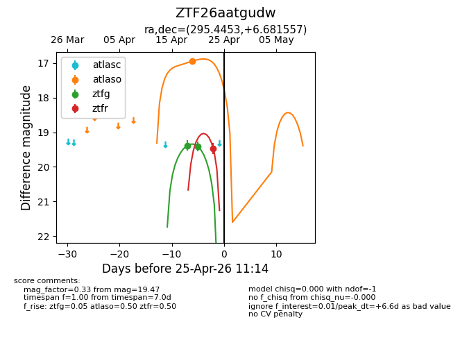
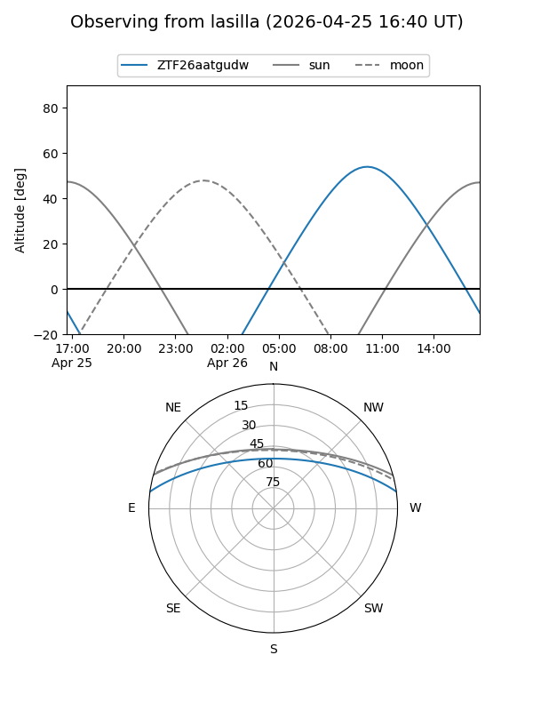
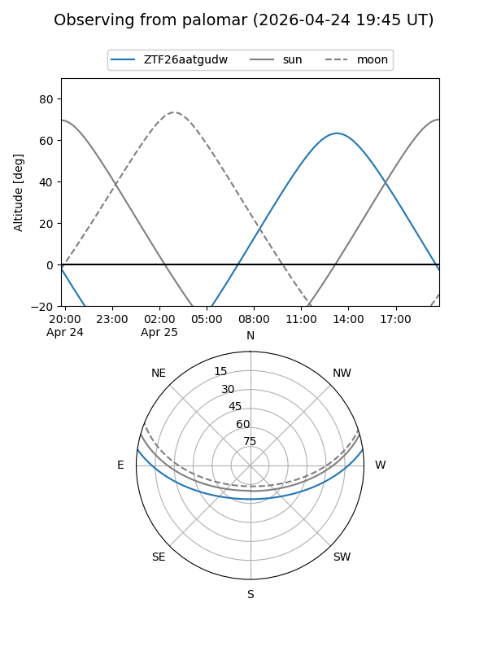
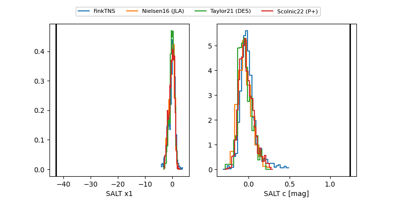

ZTF26aatgudw
Target ZTF26aatgudw at 2026-04-25 11:15
Aliases and brokers:
FINK: link
Lasair: link
ALeRCE: link
alt names
ZTF26aatgudw (ztf,fink_ztf)
Coordinates:
equatorial (ra, dec) = 295.4453,+6.68156
equatorial (HMS+DMS) = 19:41:46.88,+06:40:53.60
galactic (l, b) = (44.7166,-8.02234)
Flags:
Photometry:
last atlaso=16.95, ztfg=19.41, ztfr=19.47
1 atlaso, 2 ztfg, 1 ztfr detections
Lightcurve

Visibility


Additional plots
